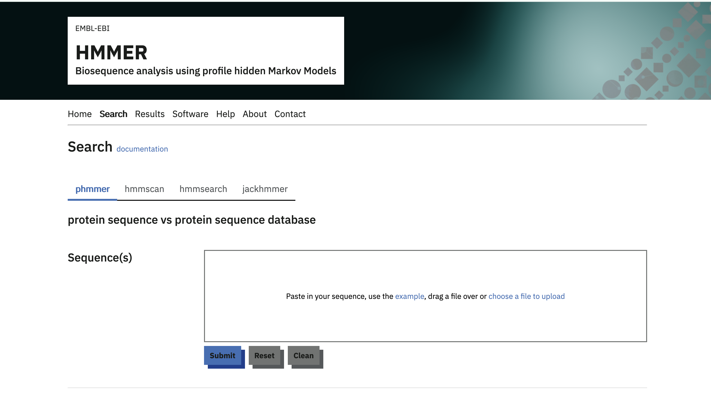
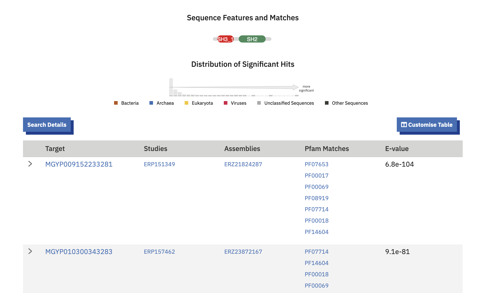
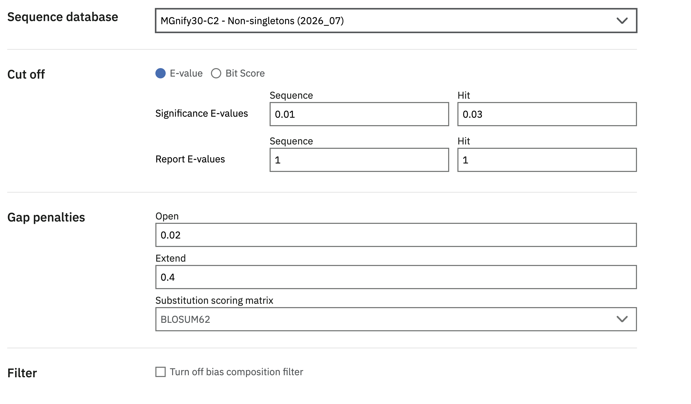
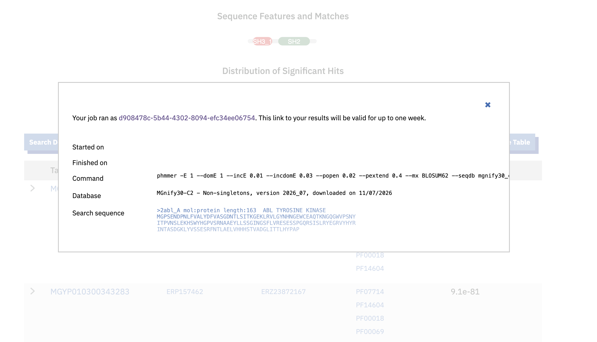

Sequence search
MGnify protein sequence searches are provided by the EMBL-EBI HMMER web HMMER web service. Use phmmer to search a protein query sequence in the MGnify Proteins Database.

Running a search
- Paste a FASTA-formatted amino acid sequence into the Protein sequence field, or upload a sequence file.
- Under Sequence database, choose one of the MGnify30 databases described below. The link above preselects MGnify30-C2.
- Optionally adjust the cut-offs and other advanced settings.
- Select Submit to start the search.
phmmerreturns sequences with statistically significant similarity to the query. Results are ordered by significance and include the target protein accessions, alignments, scores and E-values.
Note: With the increasing size of MGnify Proteins, downstream tools like HMMER Web require subsets which are significantly reduced in size. To that end, the “MGnify30” clustering set was created.

Choosing a MGnify30 database
MGnify30 contains representative sequences from MGnify protein clusters formed at 30% sequence identity. HMMER provides three subsets for different search goals:

Non-singletons (MGnify30-C2)
The non-singletons subset was created by extracting clusters that have at least two members, thereby excluding a majority of the representatives. This subset contains 128,674,267 cluster representatives.
Larger non-singletons (MGnify30-C5-FL)
The larger non-singletons subset was created by extracting clusters that have at least five members, including at least one member that is predicted to be a full-length sequence. This subset therefore reduces the space even further, and guarantees at least one full-length sequence for increased confidence. This subset contains 20,911,652 cluster representatives.
Pfam-poor non-singletons (MGnify30-C5-PPfam)
The Pfam-poor non-singletons subset was created by extracting clusters that have at least five members, and where at least 90% of the cluster members do not have a Pfam accession. This subset similarly reduces the space significantly, and contains clusters for which function is relatively unknown. This subset contains 18,155,509 cluster representatives.
See the HMMER documentation for the current list and definitions of target databases.
Recording and interpreting results
The target databases are updated periodically. Open Search Details above the HMMER results table to find the target database name, release date and other search settings. Record these details with the query sequence when a search needs to be reproduced or reported.

HMMER’s results documentation explains the results table, domain graphics, alignments, scores and E-values.
Downloading MGnify protein data
MGnify protein releases and supporting files are also available from the MGnify FTP server. For questions or feedback, please contact the MGnify team.
Citation
@online{2026,
author = {, MGnify},
title = {Sequence Search},
date = {2026-09-23},
url = {https://docs.mgnify.org/src/docs/mgnify-proteins-sequence-search.html},
langid = {en}
}